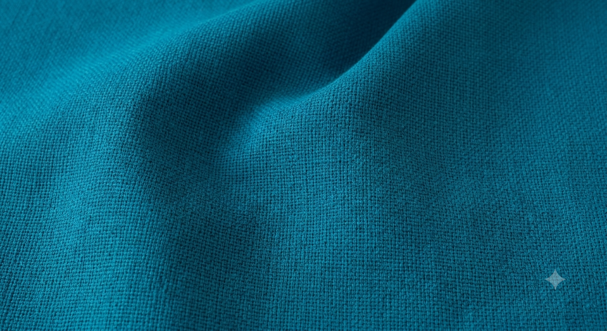
Vasco
Tela de excelente calidad, ideal para la tapicería de sofás, sillones y otros muebles.
- Ofrece una agradable textura
- buena resistencia al uso diario
- Disponible en más colores
Explora nuestras categorías. Escríbenos por WhatsApp para conocer disponibilidad, precios y muestras.
Telas decorativas y de tapicería en distintas texturas, colores y niveles de resistencia.

Tela de excelente calidad, ideal para la tapicería de sofás, sillones y otros muebles.
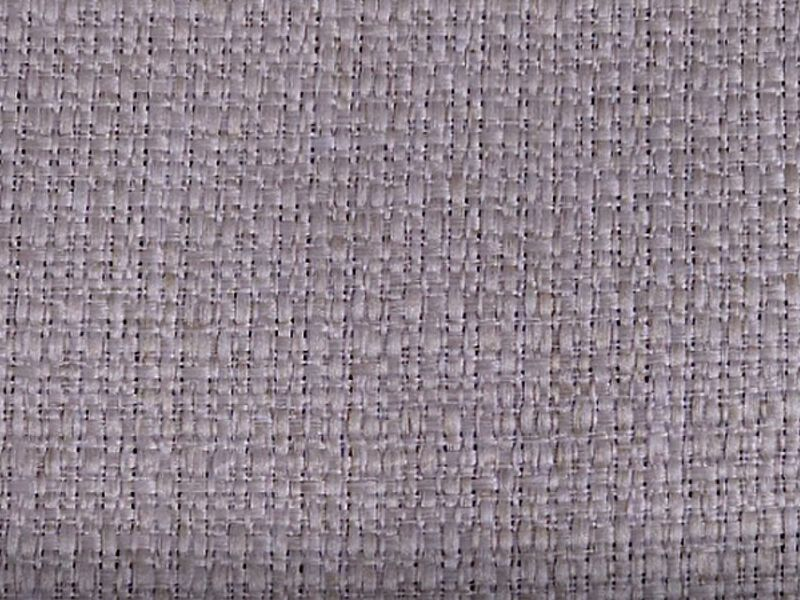
Tela de alto gramaje con textura suave, ideal para la tapicería de sofás, sillones y muebles de uso frecuente.

Tela de excelente calidad, diseñada para brindar elegancia, confort y durabilidad en muebles tapizados.

ela de acabado tipo piel que aporta elegancia y sofisticación a todo tipo de muebles tapizados.
Espumas de distintas densidades para asientos, respaldos y proyectos de confort.

Espuma de alta densidad, ideal para muebles que requieren mayor firmeza y durabilidad.

Espuma versátil, recomendada para cojines, respaldos y aplicaciones de tapicería.
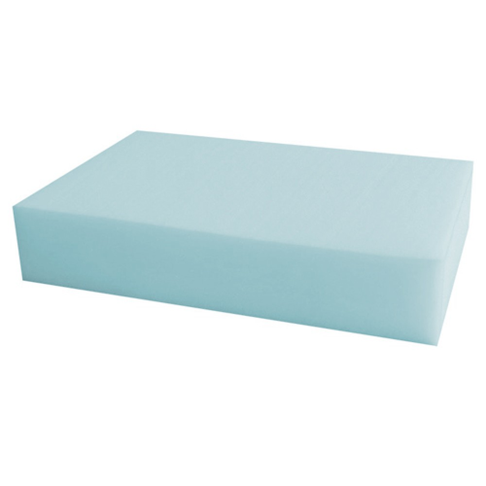
Espuma de densidad media que brinda mayor comodidad para asientos y respaldos.
Cueros naturales y sintéticos para sillones, sillas y proyectos comerciales.

Textura elegante y acabado versátil para muebles y tapicería.
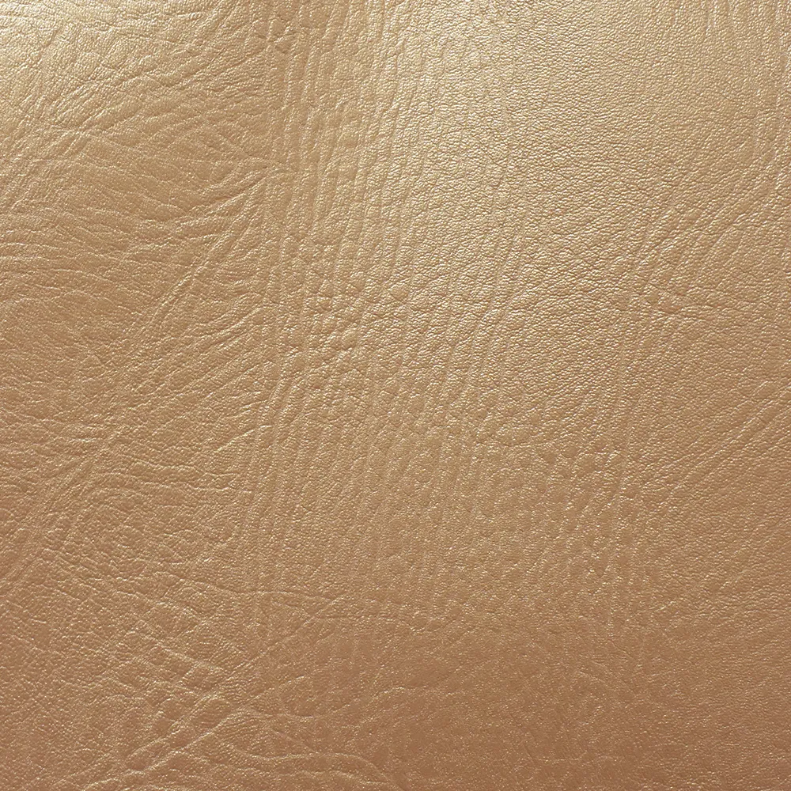
Acabado sofisticado con apariencia premium para proyectos de tapicería.
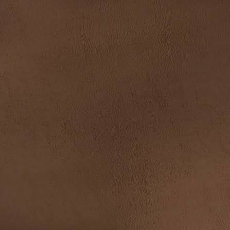
Material resistente y versátil para tapicería de alto uso.
Todo lo necesario para complementar tu proyecto de tapicería.
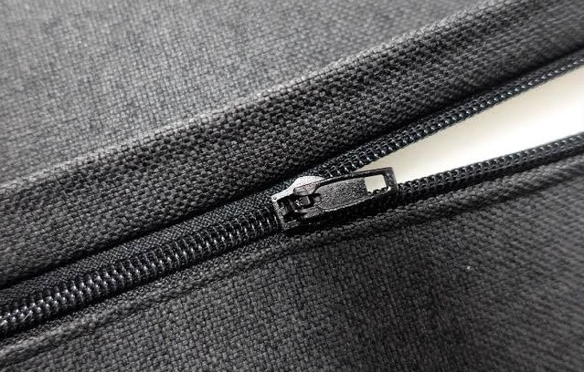
Distintos tamaños y colores para cojines y fundas.
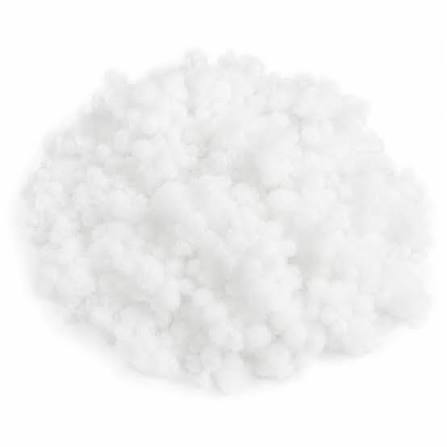
Relleno suave para cojines y almohadones decorativos.

Terminaciones metálicas para tapicería clásica y contemporánea.
Botones forrados y decorativos para acabados de capitoné.

Acabado elegante y sofisticado para muebles tapizados.
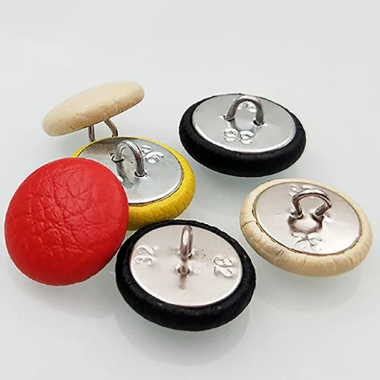
Acabado clásico y funcional para muebles tapizados.
Sistemas de resortes para bases y estructuras de sillones y sofás.

Sistema clásico para bases de asiento firmes y duraderas.
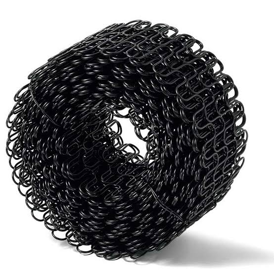
Sistema de soporte ideal para asientos cómodos y resistentes.
Patas de madera y metal en distintos estilos y acabados.
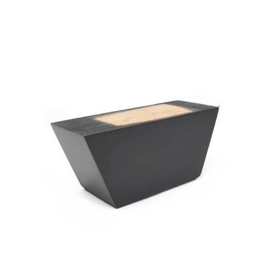
Diseño clásico para sillones y sofás tradicionales.

Estilo contemporáneo para muebles modernos y minimalistas.
Hilos resistentes para costura de tapicería profesional.
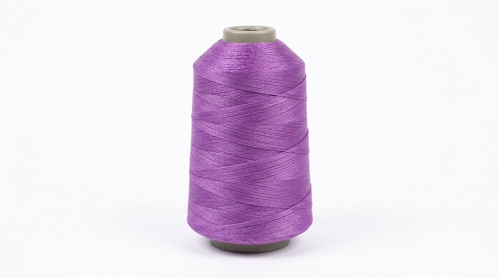
Ideal para costuras resistentes en cuero y telas gruesas.
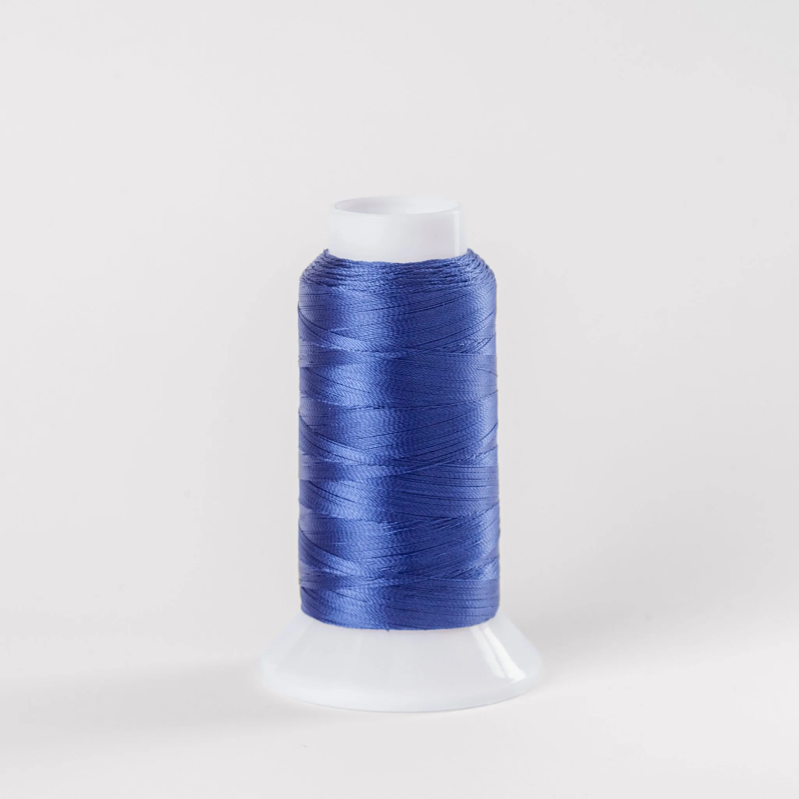
Costuras firmes y duraderas para tapizados de uso diario.
Nuestro catálogo se actualiza constantemente. Escríbenos y te ayudamos a encontrar el material ideal para tu proyecto.